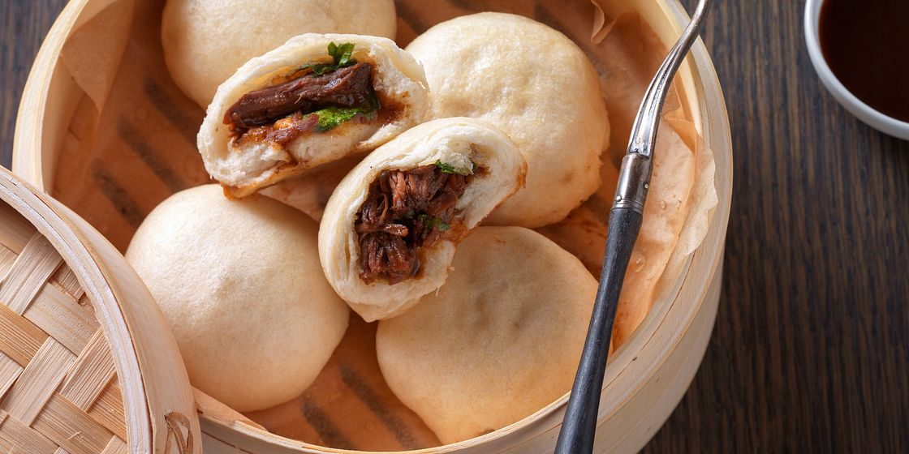
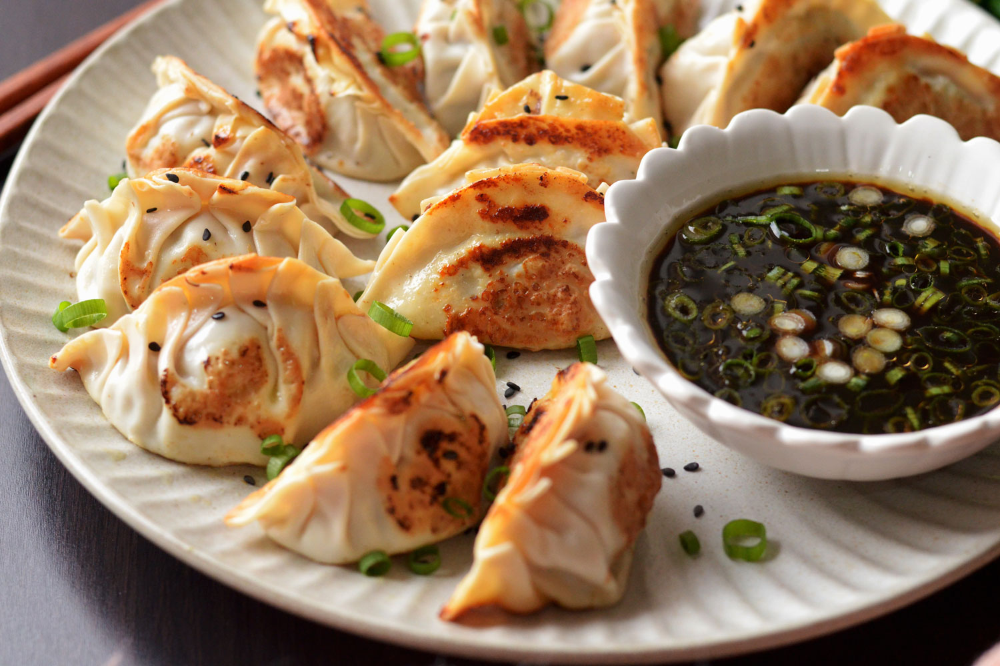

Det finns inget mysigare än att duka upp för en kväll med hemgjorda dumplings. Dessa knyten är fyllda med smakrik nötfärs och hetta från ingefära. De är krispiga i botten, ångade på toppen och perfekta att doppa i soja.
- 400 g nötfärs
- 1 paket wonton/gyoza-deg (ca 30 ark)
- 3 salladslökar, finhackade
- 2 vitlöksklyftor, pressade
- 1 msk färsk ingefära, riven
- 1 msk japansk soja
- 1 tsk sesamolja
- Salt & peppar
- Olja till stekning + vatten till ångning
Blanda smeten: Rör ihop nötfärs, lök, vitlök, ingefära, soja och sesamolja i en skål.
Fyll knytena: Lägg en tesked fyllning mitt på ett degark. Fukta kanten med vatten. Vik ihop till en halvmåne och nyp ihop kanterna hårt.
Stek: Hetta upp olja i en panna. Lägg i dina dumplings och stek tills undersidan är gyllenbrun och krispig.
Ånga: Häll försiktigt i 1 dl vatten i pannan och lägg genast på locket. Låt ånga i ca 5 minuter tills vattnet kokat bort.
